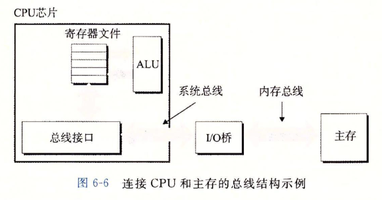
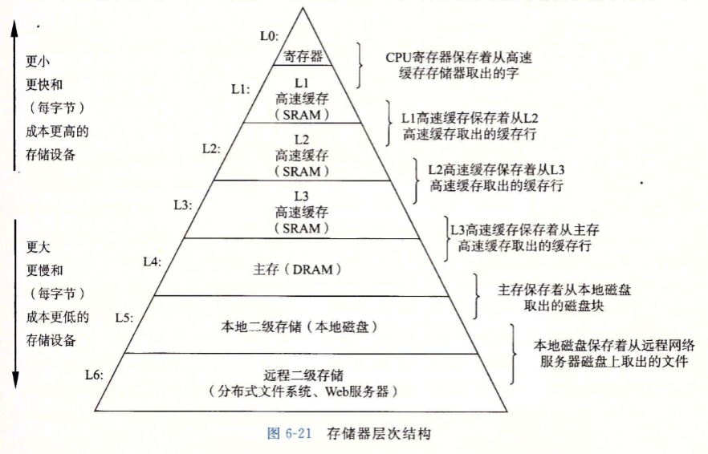

在简单模型中，存储器系统是一个线性的字节数组，而CPU能够在一个常数时间内访问每个存储器位置。实际上，存储器系统(memory system)是一个具有不同容量、成本和访问时间的存储设备的层次结构。CPU寄存器保存着最常用的数据。
靠近CPU的小的、快速的高速缓存存储器(cache memory)作为一部分存储在相对慢速的主存储器(main memory)中数据和指令的缓冲区域。主存缓存存储在容量较大的、慢速磁盘上的数据，而这些磁盘常常又作为存储在通过网络连接的其他
机器的磁盘或磁带上的数据的缓冲区域。
存储器层次结构是可行的，这是因为与下一个更低层次的存储设备相比来说，一个编写良好的程序倾向于更频繁地访问某一个层次上的存储设备。所以，下一层的存储设备可以更慢速一点，也因此可以更大，每个比特位更便宜。整体效果
是一个大的存储器池，其成本与层次结构底层最便宜的存储设备相当，但是却以接近于层次结构顶部存储设备的高速率向程序提供数据。
如果你的程序需要的数据是存储在CPU寄存器中的，那么在指令的执行期间，在0个周期内就能访问到它们。如果存储在高速缓存中，需要4~75个周期。如果存储在主存中，需要上百个周期。而如果存储在磁盘上，需要大约几千万个周期!
这个思想围绕着计算机程序的一个称为局部性(locality)的基本属性。具有良好局部性的程序倾向于一次又一次地访问相同的数据项集合，或是倾向于访问邻近的数据项集合。具有良好局部性的程序比局部性差的程序更多地倾向于从存
储器层次结构中较高层次处访问数据项，因此运行得更快。例如，在Core i7系统，不同的矩阵乘法核心程序执行相同数量的算术操作，但是有不同程度的局部性，它们的运行时间可以相差40倍!
存储技术
随机访问存储器
随机访问存储器(Random-Access Memory,RAM)分为两类:静态的和动态的。静态RAM(SRAM)比动态RAM (DRAM)更快，但也贵得多。SRAM用来作为高速缓存存储器，既可以在CPU芯片上，也可以在片下。DRAM用来作为主存以及图形
系统的帧缓冲区。典型地，一个桌面系统的SRAM不会超过几兆字节，但是DRAM却有几百或几千兆字节。
SRAM对诸如光和电噪声这样的干扰不敏感。SRAM单元比DRAM单元使用更多的晶体管，因而密集度低，而且更贵，功耗更大。
访问主存
数据流通过称为总线(bus)的共享电子电路在处理器和DRAM主存之间来来回回。每次CPU和主存之间的数据传送都是通过一系列步骤来完成的，这些步骤称为总线事务(bustransaction)。读事务(read transaction)从主存传送数
据到CPU。写事务(write trans-action)从CPU传送数据到主存。
下图展示了一个示例计算机系统的配置。主要部件是CPU芯片、我们将称为I/O桥接器(I/O bridge)的芯片组(其中包括内存控制器)，以及组成主存的DRAM内存模块。这些部件由一对总线连接起来，其中一条总线是系统总线(system bus)，
它连接CPU和I/O桥接器，另一条总线是内存总线(memory bus)，它连接I/U桥接器和主存。I/O桥接器将系统总线的电子信号翻译成内存总线的电子信号。正如我们看到的那样，I/O桥也将系统总线和内存总线连接到I/O总线，像磁盘
和图形卡这样的I/O设备共享I/O总线。

CPU加载操作
movq A,%rax
地址A的内容被加载到寄存器%rax中。CPU芯片上称为总线接口(bus interface)的电路在总线上发起读事务。读事务是由三个步骤组成的：
首先，CPU将地址A放到系统总线上。I/O桥将信号传递到内存总线。
接下来，主存感觉到内存总线上的地址信号，从内存总线读地址，从DRAM取出数据字，并将数据写到内存总线。I/O桥将内存总线信号翻译成系统总线信号，然后沿着系统总线传递。
最后，CPU感觉到系统总线上的数据，从总线上读数据，并将数据复制到寄存器%rax.
CPU存储操作
movq %rax,A
这里，寄存器%rax的内容被写到地址A, CPU发起写事务。同样，有三个基本步骤：
首先，CPU将地址放到系统总线上。内存从内存总线读出地址，并等待数据到达。
接下来，CPU将%rax中的数据字复制到系统总线。
最后，主存从内存总线读出数据字，并且将这些位存储到DRAM中。
磁盘存储
从磁盘上读信息的时间为毫秒级，比从DRAM读慢了10万倍，比从SRAM读慢了100万倍。
连接I/O设备
例如图形卡、监视器、鼠标、键盘和磁盘这样的输人/输出(I/O)设备，都是通过I/O总线，例如Intel的外围设备互连(Peripheral Component Interconnect, PCI)总线连接到CPU和主存的。系统总线和内存总线是
与CPU相关的，与它们不同，诸如PCI这样的I/O总线设计成与底层CPU无关。虽然I/O总线比系统总线和内存总线慢，但是它可以容纳种类繁多的第三方I/O设备。
局部性
一个编写良好的计算机程序常常具有良好的局部性(locality)。也就是，它们倾向于引用邻近于其他最近引用过的数据项的数据项，或者最近引用过的数据项本身。这种倾向性，被称为局部性原理(principle of locality)，
是一个持久的概念，对硬件和软件系统的设计和性能都有着极大的影响。
局部性通常有两种不同的形式:时间局部性(temporal locality)和空间局部性(spatiallocality)。
在一个具有良好时间局部性的程序中，被引用过一次的内存位置很可能在不远的将来再被多次引用。
在一个具有良好空间局部性的程序中，如果一个内存位置被引用了一次，那么程序很可能在不远的将来引用附近的一个内存位置。
一般而言，有良好局部性的程序比局部性差的程序运行得更快。现代计算机系统的各个层次，从硬件到操作系统、再到应用程序，它们的设计都利用了局部性。
在硬件层，局部性原理允许计算机设计者通过引人称为高速缓存存储器的小而快速的存储器来保存最近被引用的指令和数据项，从而提高对主存的访问速度。
在操作系统级，局部性原理允许系统使用主存作为虚拟地址空间最近被引用块的高速缓存。
类似地，操作系统用主存来缓存磁盘文件系统中最近被使用的磁盘块。
局部性原理在应用程序的设计中也扮演着重要的角色。例如，Web浏览器将最近被引用的文档放在本地磁盘上，利用的就是时间局部性。大容量的Web服务器将最近被请求的文档放在前端磁盘高速缓存中，
这些缓存能满足对这些文档的请求，而不需要服务器的任何干预。
量化评价程序中局部性的一些简单原则:
重复引用相同变量的程序有良好的时间局部性。
对于具有步长为k的引用模式的程序，步长越小，空间局部性越好。具有步长为l的引用模式的程序有很好的空间局部性。在内存中以大步长跳来跳去的程序空间局部性会很差。
对于取指令来说，循环有好的时间和空间局部性。循环体越小，循环迭代次数越多，局部性越好。
存储器层次结构
存储技术和计算机软件的一些基本的和持久的属性:
存储技术:不同存储技术的访问时间差异很大。速度较快的技术每字节的成本要比速度较慢的技术高，而且容量较小。CPU和主存之间的速度差距在增大。
计算机软件:一个编写良好的程序倾向于展示出良好的局部性。
一般而言，从高层往底层走，存储设备变得更慢、更便宜和更大。在最高层(L0，是少量快速的CPU寄存器，CPU可以在一个时钟周期内访问它们。接下来是一个或多个小型到中型的基于SRAM的高速缓存存储器，可以在几个CPU时钟周期
内访问它们。然后是一个大的基于DRAM的主存，可以在几十到几百个时钟周期内访问它们。接下来是慢速但是容量很大的本地磁盘。最后，有些系统甚至包括了一层附加的远程服务器上的磁盘，要通过网络来访问它们。

存储器层次结构中的缓存
一般而言.高速缓存(cache，读作“cash")是一个小而快速的存储设备，它作为存储在更大、也更慢的设备中的数据对象的缓冲区域。使用高速缓存的过程称为缓存(caching,
读作“cashing").
存储器层次结构的中心思想是，对于每个k，位于k层的更快更小的存储设备作为位于k+1层的更大更慢的存储设备的缓存。换句话说，层次结构中的每一层都缓存来自较低一层
的数据对象。例如，本地磁盘作为通过网络从远程磁盘取出的文件(例如Web页面)的缓存，主存作为本地磁盘上数据的缓存，依此类推，直到最小的缓存CPU寄存器组。
缓存命中
当程序需要第k+l层的某个数据对象d时，它首先在当前存储在第k层的一个块中查找d。如果d刚好缓存在第k层中，那么就是我们所说的缓存命中(cache hit)。该程序直接从
第k层读取d，根据存储器层次结构的性质，这要比从第k+1层读取d更快。
缓存不命中
另一方面，如果第k层中没有缓存数据对象d，那么就是我们所说的缓存不命中(cache miss)。当发生缓存不命中时，第k层的缓存从第k+1层缓存中取出包含d的那个块，如果
第k层的缓存已经满了，可能就会覆盖现存的一个块。
覆盖一个现存的块的过程称为替换(replacing)或驱逐(evicting)这个块。被驱逐的这个块有时也称为栖牲块(victim block)。决定该替换哪个块是由缓存的替换策略
(replacement policy)来控制的。例如，一个具有随机替换策略的缓存会随机选择一个牺牲块。一个具有最近最少被使用(LRU)替换策略的缓存会选择那个最后被访问的时间距现
在最远的块。在第k层缓存从第k+1层取出那个块之后，程序就能像前面一样从第k层读出d了。
概括来说，基于缓存的存储器层次结构行之有效，是因为较慢的存储设备比较快的存储设备更便宜，还因为程序倾向于展示局部性:
利用时间局部性:由于时间局部性，同一数据对象可能会被多次使用。一旦一个数据对象在第一次不命中时被复制到缓存中，我们就会期望后面对该目标有一系列的访问命中。因为缓存比低一层的存储设备更快，对后面的命中
的服务会比最开始的不命中快很多。
利用空间局部性:块通常包含有多个数据对象。由于空间局部性，我们会期望后面对该块中其他对象的访问能够补偿不命中后复制该块的花费。
小结
基本存储技术包括随机存储器(RAM)、非易失性存储器(ROM)和磁盘。RAM有两种基本类型。静态RAM(SRAM)快一些，但是也贵一些，它既可以用做CPU芯片上的高速缓存，也可以
用做芯片下的高速缓存。动态RAM(DRAM)慢一点，也便宜一些，用做主存和图形帧缓冲区。即使是在关电的时候，ROM也能保持它们的信息，可以用来存储固件。旋转磁盘是机械的非
易失性存储设备，以每个位很低的成本保存大量的数据，但是其访问时间比DRAM长得多。固态硬盘(SSD)基于非易失性的闪存，对某些应用来说，越来越成为旋转磁盘的具有吸引力的
替代产品。
一般而言，较快的存储技术每个位会更贵，而且容量更小。这些技术的价格和性能属性正在以显著不同的速度变化着。特别地，DRAM和磁盘访问时间远远大于CPU周期时间。系统
通过将存储器组织成存储设备的层次结构来弥补这些差异，在这个层次结构中，较小、较快的设备在顶部，较大、较慢的设备在底部。因为编写良好的程序有好的局部性，大多数数据
都可以从较高层得到服务，结果就是存储系统能以较高层的速度运行，但却有较低层的成本和容量。
程序员可以通过编写有良好空间和时间局部性的程序来显著地改进程序的运行时间。利用基于SRAM的高速缓存存储器特别重要。主要从高速缓存取数据的程序能比主要从内存取
数据的程序运行得快得多。